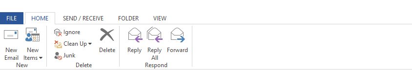

The Office Ribbon framework is a rich command presentation system that provides a modern alternative to the classic HTML controls of traditional web applications applications.
The Ribbon Framework is a collection of API's that supports the creation of richt command enabled controls for Web Developers.
This rich, modern UI command framework offers:
The primary UI components of the Ribbon framework, the ribbon command bar and the context menu system, are differentiated structurally through views. The framework supports two views: The Ribbon and the Context Menu.
The UI of the Ribbon View is the primary feature of the Ribbon framework and provides the next-generation user experience for presenting commands in Web Applications.
The ribbon is a command bar that exposes the major featured of an application through a series of tabs as the top of an application window. It it similar in functionaliry and appearance ot the Microsoft Office 2013 Fluent UI. The ribbon provides an intuitive counterpoint to the trials-and-error process of command discovery that is typical of standard Windows Menu Systems. Optimized for efficiency and discoverability, the ribbon facilitates finding, understaind and using commands with minium mouse clicks and keystrokes through a system of standard controls, galleries and live previewing.
The folllowing image illustrate the Ribbon framework implementation in a custom website.
